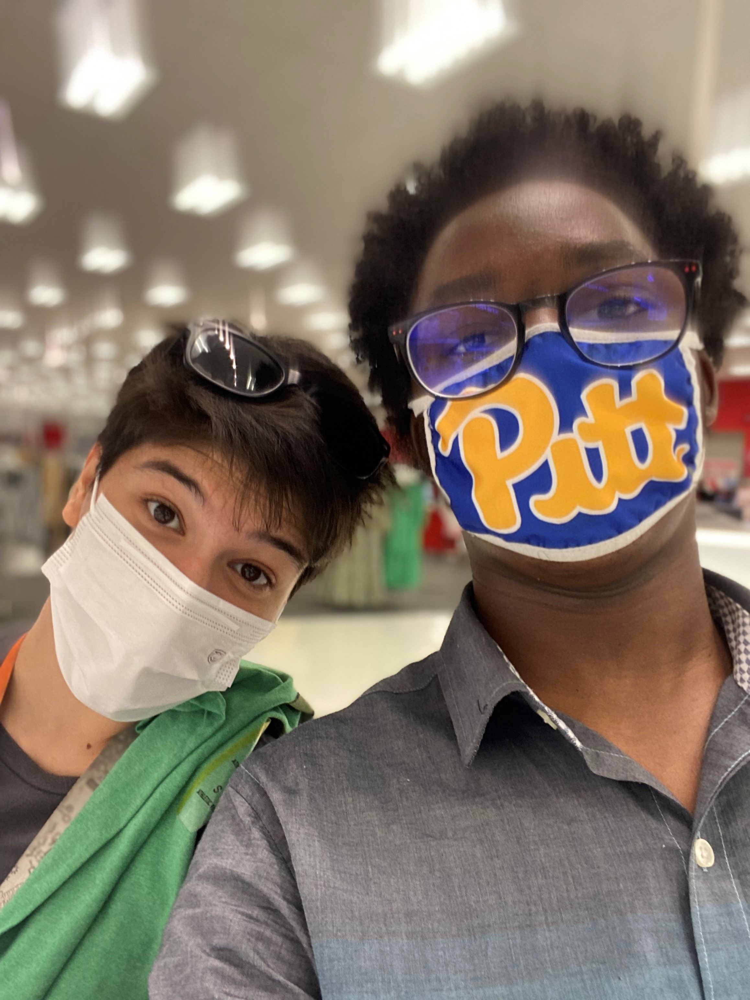

Hi-Diddly-Ho Neighberino! My name is Noah, I am from Northern Virginia. I am a Junior Information Science major in the University of Pittsburgh School of Computing and Information with a minor in Philosophy. MB Personality tyoe: INTJ-T
Click Here to See My Spotify Playlists
The Family |
||
|  |
Information Science with a focus on Cyber Security a minor in Philosophy
| Information Science | Philosophy |
Although computer science is not my major, coding and scripting is something I engage in regularly. R&D (Research and Development) is one of my favorite things to do and the skills from UX design and usiility testing hep with producing high quality deliverables for projects.
I am considering digintal forensics, incedent response or Cyber Law. When I think of cybersecurity, I think of balance. The first thing that comes to mind is the CIA triad, a balance between confidentiality, integrity, and accountability. I believe this is not only the goal of cybersecurity but the goal of life… finding this balance. Cybersecurity although highly technical it is a philosophy; a field that is founded on logic, ethics, and the pursuit of knowledge. I’ve decided to continue the initial path I laid out in high school by participating in internships, studying for my third CompTIA industry certification and creating a career path to follow.